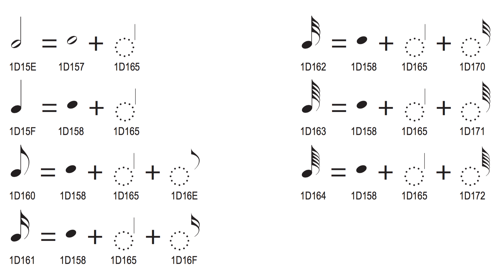

Noteheads (U+E0A0–U+E0FF)
| Glyph | Description | Glyph | Description |
|---|---|---|---|
| | U+E0A0 noteheadDoubleWhole Double whole (breve) notehead |
| U+E0A1 noteheadDoubleWholeSquare Double whole (breve) notehead (square) |
| | U+E0A2 noteheadWhole Whole (semibreve) notehead |
| U+E0A3 (and U+1D157) noteheadHalf Half (minim) notehead |
| | U+E0A4 (and U+1D158) noteheadBlack Black notehead |
| U+E0A5 (and U+1D159) noteheadNull Null notehead |
| | U+E0A6 noteheadXDoubleWhole X notehead double whole |
| U+E0A7 noteheadXWhole X notehead whole |
| | U+E0A8 noteheadXHalf X notehead half |
| U+E0A9 (and U+1D143) noteheadXBlack X notehead black |
| | U+E0AA noteheadXOrnate Ornate X notehead |
| U+E0AB noteheadXOrnateEllipse Ornate X notehead in ellipse |
| | U+E0AC noteheadPlusDoubleWhole Plus notehead double whole |
| U+E0AD noteheadPlusWhole Plus notehead whole |
| | U+E0AE noteheadPlusHalf Plus notehead half |
| U+E0AF (and U+1D144) noteheadPlusBlack Plus notehead black |
| | U+E0B0 noteheadCircleXDoubleWhole Circle X double whole |
| U+E0B1 noteheadCircleXWhole Circle X whole |
| | U+E0B2 noteheadCircleXHalf Circle X half |
| U+E0B3 (and U+1D145) noteheadCircleX Circle X notehead |
| | U+E0B4 noteheadDoubleWholeWithX Double whole notehead with X |
| U+E0B5 noteheadWholeWithX Whole notehead with X |
| | U+E0B6 noteheadHalfWithX Half notehead with X |
| U+E0B7 noteheadVoidWithX Void notehead with X |
| | U+E0B8 (and U+1D146) noteheadSquareWhite Square notehead white |
| U+E0B9 (and U+1D147) noteheadSquareBlack Square notehead black |
| | U+E0BA noteheadTriangleUpDoubleWhole Triangle notehead up double whole |
| U+E0BB noteheadTriangleUpWhole Triangle notehead up whole |
| | U+E0BC noteheadTriangleUpHalf Triangle notehead up half |
| U+E0BD (and U+1D148) noteheadTriangleUpWhite Triangle notehead up white |
| | U+E0BE (and U+1D149) noteheadTriangleUpBlack Triangle notehead up black |
| U+E0BF (and U+1D14A) noteheadTriangleLeftWhite Triangle notehead left white |
| | U+E0C0 (and U+1D14B) noteheadTriangleLeftBlack Triangle notehead left black |
| U+E0C1 (and U+1D14C) noteheadTriangleRightWhite Triangle notehead right white |
| | U+E0C2 (and U+1D14D) noteheadTriangleRightBlack Triangle notehead right black |
| U+E0C3 noteheadTriangleDownDoubleWhole Triangle notehead down double whole |
| | U+E0C4 noteheadTriangleDownWhole Triangle notehead down whole |
| U+E0C5 noteheadTriangleDownHalf Triangle notehead down half |
| | U+E0C6 (and U+1D14E) noteheadTriangleDownWhite Triangle notehead down white |
| U+E0C7 (and U+1D14F) noteheadTriangleDownBlack Triangle notehead down black |
| | U+E0C8 (and U+1D150) noteheadTriangleUpRightWhite Triangle notehead up right white |
| U+E0C9 (and U+1D151) noteheadTriangleUpRightBlack Triangle notehead up right black |
| | U+E0CA (and U+1D152) noteheadMoonWhite Moon notehead white |
| U+E0CB (and U+1D153) noteheadMoonBlack Moon notehead black |
| | U+E0CC (and U+1D154) noteheadTriangleRoundDownWhite Triangle-round notehead down white |
| U+E0CD (and U+1D155) noteheadTriangleRoundDownBlack Triangle-round notehead down black |
| | U+E0CE (and U+1D156) noteheadParenthesis Parenthesis notehead |
| U+E0CF noteheadSlashedBlack1 Slashed black notehead (bottom left to top right) |
| | U+E0D0 noteheadSlashedBlack2 Slashed black notehead (top left to bottom right) |
| U+E0D1 noteheadSlashedHalf1 Slashed half notehead (bottom left to top right) |
| | U+E0D2 noteheadSlashedHalf2 Slashed half notehead (top left to bottom right) |
| U+E0D3 noteheadSlashedWhole1 Slashed whole notehead (bottom left to top right) |
| | U+E0D4 noteheadSlashedWhole2 Slashed whole notehead (top left to bottom right) |
| U+E0D5 noteheadSlashedDoubleWhole1 Slashed double whole notehead (bottom left to top right) |
| | U+E0D6 noteheadSlashedDoubleWhole2 Slashed double whole notehead (top left to bottom right) |
| U+E0D7 noteheadDiamondDoubleWhole Diamond double whole notehead |
| | U+E0D8 noteheadDiamondWhole Diamond whole notehead |
| U+E0D9 noteheadDiamondHalf Diamond half notehead |
| | U+E0DA noteheadDiamondHalfWide Diamond half notehead (wide) |
| U+E0DB noteheadDiamondBlack Diamond black notehead |
| | U+E0DC noteheadDiamondBlackWide Diamond black notehead (wide) |
| U+E0DD noteheadDiamondWhite Diamond white notehead |
| | U+E0DE noteheadDiamondWhiteWide Diamond white notehead (wide) |
| U+E0DF noteheadDiamondDoubleWholeOld Diamond double whole notehead (old) |
| | U+E0E0 noteheadDiamondWholeOld Diamond whole notehead (old) |
| U+E0E1 noteheadDiamondHalfOld Diamond half notehead (old) |
| | U+E0E2 noteheadDiamondBlackOld Diamond black notehead (old) |
| U+E0E3 noteheadDiamondHalfFilled Half-filled diamond notehead |
| | U+E0E4 noteheadCircledBlack Circled black notehead |
| U+E0E5 noteheadCircledHalf Circled half notehead |
| | U+E0E6 noteheadCircledWhole Circled whole notehead |
| U+E0E7 noteheadCircledDoubleWhole Circled double whole notehead |
| | U+E0E8 noteheadCircledBlackLarge Black notehead in large circle |
| U+E0E9 noteheadCircledHalfLarge Half notehead in large circle |
| | U+E0EA noteheadCircledWholeLarge Whole notehead in large circle |
| U+E0EB noteheadCircledDoubleWholeLarge Double whole notehead in large circle |
| | U+E0EC noteheadCircledXLarge Cross notehead in large circle |
| U+E0ED noteheadLargeArrowUpDoubleWhole Large arrow up (highest pitch) double whole notehead |
| | U+E0EE noteheadLargeArrowUpWhole Large arrow up (highest pitch) whole notehead |
| U+E0EF noteheadLargeArrowUpHalf Large arrow up (highest pitch) half notehead |
| | U+E0F0 noteheadLargeArrowUpBlack Large arrow up (highest pitch) black notehead |
| U+E0F1 noteheadLargeArrowDownDoubleWhole Large arrow down (lowest pitch) double whole notehead |
| | U+E0F2 noteheadLargeArrowDownWhole Large arrow down (lowest pitch) whole notehead |
| U+E0F3 noteheadLargeArrowDownHalf Large arrow down (lowest pitch) half notehead |
| | U+E0F4 noteheadLargeArrowDownBlack Large arrow down (lowest pitch) black notehead |
| U+E0F5 noteheadParenthesisLeft Opening parenthesis |
| | U+E0F6 noteheadParenthesisRight Closing parenthesis |
| U+E0F7 noteheadCircleSlash Circle slash notehead |
| | U+E0F8 noteheadHeavyX Heavy X notehead |
| U+E0F9 noteheadHeavyXHat Heavy X with hat notehead |
| | U+E0FA noteheadWholeFilled Filled whole (semibreve) notehead |
| U+E0FB noteheadHalfFilled Filled half (minim) notehead |
| | U+E0FC noteheadDiamondOpen Open diamond notehead |
Recommended stylistic alternates
| Glyph | Description | Glyph | Description |
|---|---|---|---|
| | uniE0A0.salt01 noteheadDoubleWholeAlt Double whole note (breve), single vertical strokes |
| uniE0A0.ss01 noteheadDoubleWholeSmall Double whole note (breve) (small staff) |
| | uniE0A0.ss05 noteheadDoubleWholeOversized Double whole note (breve) (oversized) |
| uniE0A1.ss05 noteheadDoubleWholeSquareOversized Double whole note (breve) notehead (square) (oversized) |
| | uniE0A2.ss01 noteheadWholeSmall Whole notehead (small staff) |
| uniE0A2.ss05 noteheadWholeOversized Whole notehead (oversized) |
| | uniE0A3.ss01 noteheadHalfSmall Half (minim) notehead (small staff) |
| uniE0A3.ss05 noteheadHalfOversized Half (minim) notehead (oversized) |
| | uniE0A4.ss01 noteheadBlackSmall Black notehead (small staff) |
| uniE0A4.ss05 noteheadBlackOversized Black notehead (oversized) |
Recommended ligatures
| Glyph | Description | Glyph | Description |
|---|---|---|---|
| | uniE0F5_uniE0A4_uniE0F6 noteheadBlackParens Parenthesised black notehead |
| uniE0F5_uniE0A3_uniE0F6 noteheadHalfParens Parenthesised half notehead |
| | uniE0F5_uniE0A2_uniE0F6 noteheadWholeParens Parenthesised whole (semibreve) notehead |
| uniE0F5_uniE0A0_uniE0F6 noteheadDoubleWholeParens Parenthesised double whole (breve) notehead |
Supplementary Groups
Implementation notes
These noteheads should be combined with stems and flags as necessary to create complete notes. In text-based applications, per the Unicode Musical Symbols documentation:

Scoring applications should draw stems using primitives, rather than using stem (i.e. U+1D165 as shown in the above image1), so that they can be drawn to the correct length.
See also the implementation notes for flags.
1. From Chapter 15 “Symbols”, The Unicode Standard, Version 6.2. Ed. Julie D. Allen et al. Mountain View; The Unicode Consortium, 2012. ↩